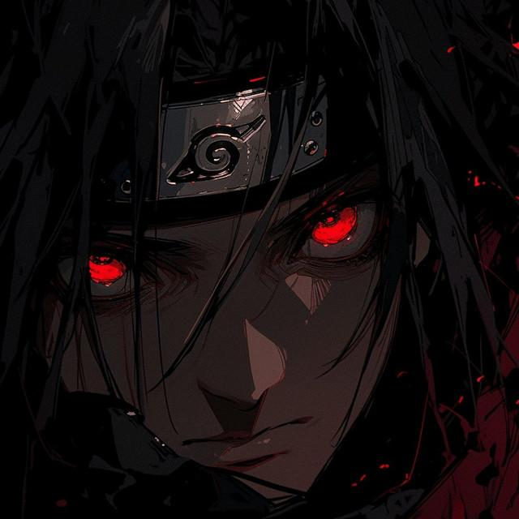

01
THE EYES
A shinobi who carried the burden of an entire village behind a pair of crimson eyes.
THE LAST UCHIHA
The techniques that lived behind those eyes — and the sacrifices he demanded. He never used a single one of them for himself.
「命を犠牲にして、里を守る。」

A shinobi who carried the burden of an entire village behind a pair of crimson eyes.